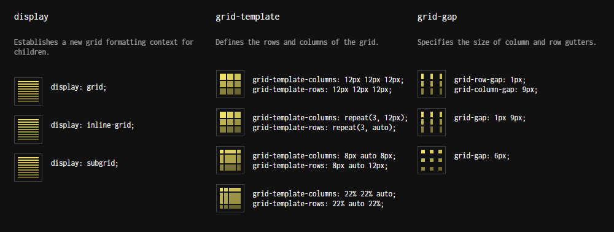
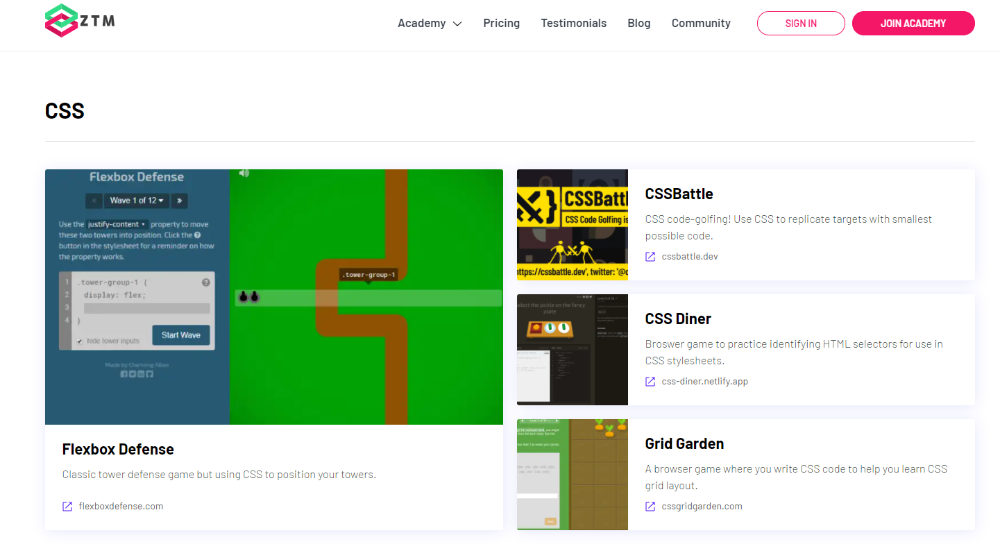
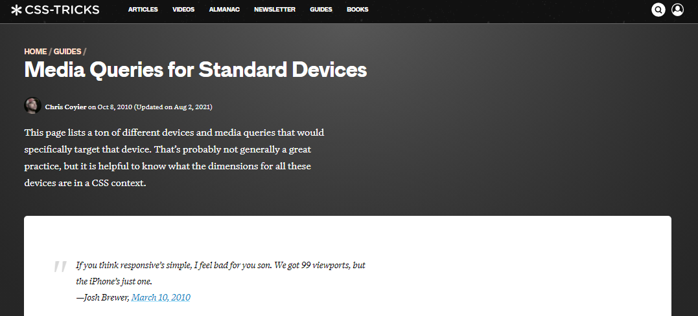

BLOG
-
CSS Grid Cheat Sheet
Today I found this cheat sheet and it pretty much simplifies CSS grids. It has been awfully helpful, and explains grids in just-enough detail. Have a look!
 https://grid.malven.co/ -
The Blue Planet / 3XN
Amazing new design by 3XN architects, the Blue Planet. From ArchDaily "Inspired by the shape of water in endless motion, Denmark’s new National Aquarium, The Blue Planet is shaped as a great whirlpool, and the building itself tells the story of what awaits inside. The whirlpool concept originates in a narrative about water, and as an image, is at once both abstract and figurative."
https://www.archdaily.com/702330/the-blue-planet-slash-3xn -
ZTM - Free Developer Resources
Love this site! It's pretty much a summary of the best resources for learning web development. I have browsed this catalogue many times and found alot of useful stuff!
 https://zerotomastery.io/resources/ -
Spiral Museum - BIG Architects
Mesmerising museum by BIG architects, from ArchDaily "Conceived as a spiralling glass pavilion embedded in the landscape, BIG's design - entilted Maison des Fondateurs - will take visitors on a narrative journey through the company's 139-year history."
https://www.archdaily.com/516245/audemars-piguet-museum-big -
Media Queries for Standard Devices
Useful page that I refer to all the time. The page contains the most useful media breakpoint queries for standard devices, such as iPhone, iPad, common laptop sizes and more. Have a look!
 https://css-tricks.com/snippets/css/media-queries-for-standard-devices/